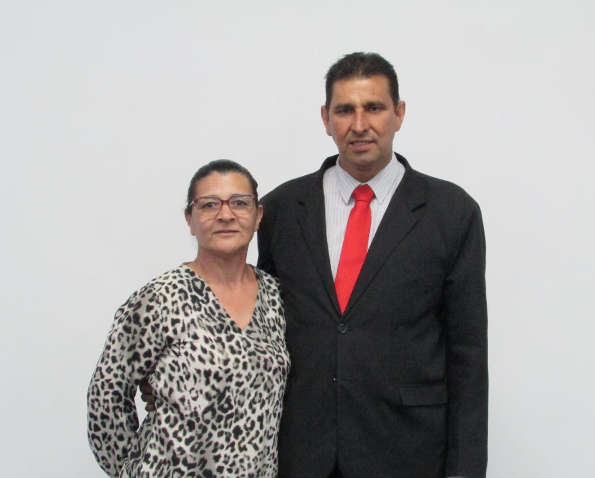

Endereço
Av. 25 de Janeiro N°752 - Jardim Patrícia - Quatro Barras - PR
Datas 2026
-
JULHO
- 25 e 26 - Encontro de Jovens
- AGOSTO
- 15 e 16 - Encontro das Crianças e Adolescentes
-
NOVEMBRO
- 14 e 15 - Encontro do Círculo de Oração

Pastor Local
Pr. Erondi Kailer e Ivone Kailer
Evangelistas
Ev. Claudino Dorneles de Paula
Ev. Elio Faustino
Presbíteros
Pb. Amauri Souza Brandão
Pb. Claudinei Martins
Pb. Edson Lopes Fernandes
Pb. Marcio Campos Mozoni
Diáconos
Dc. João Carlos Miguel
Dc. Lukas Alves
Cooperadores
Cp. Adão Nis
Cp. Jeferson Brandão
Cp. José Carlos Ferreira